地城迴響 · 技能演出重製
上一版你回報「附魔效果期間太不明顯」「其他技能還是太不明顯」。 這一版不是把數值再調大，而是換掉視覺元件本身，並依你的規格改了三個技能的機制。 每個技能一段 GIF，內容是「還沒開 → 發動 → 生效中」的完整一輪。
為什麼前兩輪「加強」沒有用。14 個技能的演出從頭到尾只用了一種元件—— 往外噴然後淡掉的小光點。所以每個技能看起來都是「某個顏色的點噴出來」， 加大、加多、拉長壽命都還是同一件事。問題不在量，在視覺語彙只有一種； 而且效果全掛在玩家身上，敵人被打完看不出中了什麼。
這一版新增兩種元件：貼在敵人身上、持續存在會動的狀態形體， 以及向外擴散的環狀衝擊波（連續的形體，不是一堆點）。
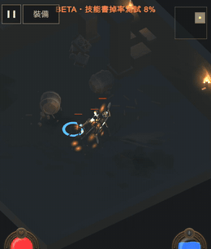
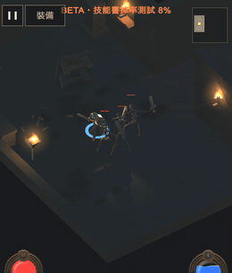
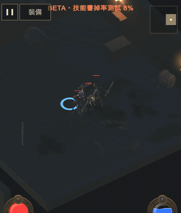
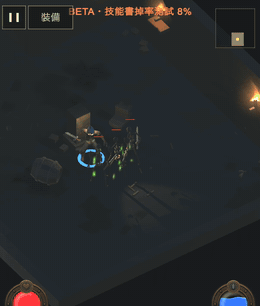
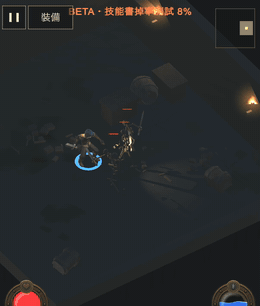
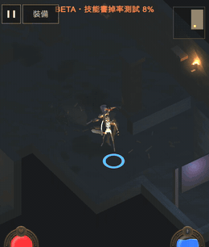
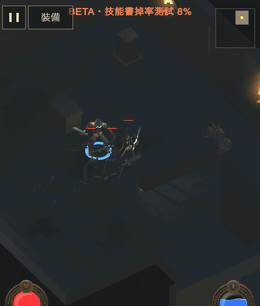
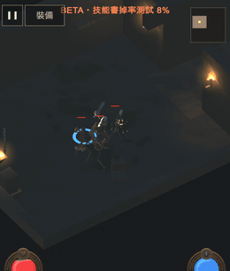
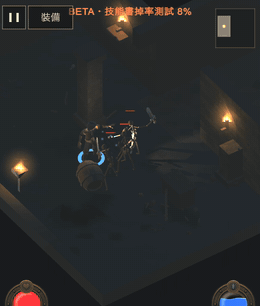
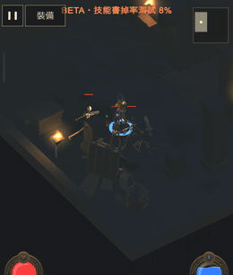
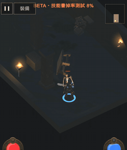
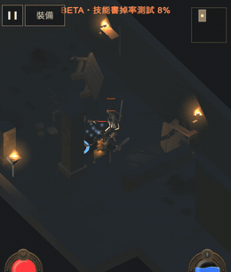
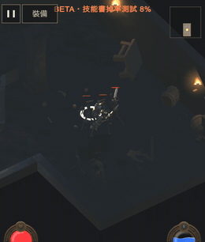
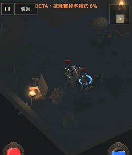
這輪有三項是機制不只是視覺，所以用程式量過，不是看畫面判斷：
| 項目 | 改動前 | 實測結果 |
|---|---|---|
| 旋風斬 旋轉 | 720°/秒，移動會蓋掉朝向 | 累計轉 1681 度 |
| 旋風斬 移動 | 形同原地 | 施法期間移動 1.30 公尺 |
| 旋風斬 360 度 | — | 四面各一隻，全部 4 隻受傷 |
| 衝鋒 撞擊半徑 | 1.5 公尺（比普攻 1.9 還小） | 半徑 3.80：最近 3.58 的受傷、4.94 的沒受傷 |
| 奧術飛彈 索敵 | 五發全打同一隻 | 三隻目標全部打到；只有一隻時仍集中打它 |
衝鋒那項第一次判成失敗，追下去是我的測試擺錯位置，不是程式錯。 衝刺距離會被牆壁截短（實測只衝 2.81 公尺而不是 4.2），第二隻沙包的最近距離 是 4.92 公尺、本來就在半徑外。判準已改成對著規格（進入半徑的一定受傷、 沒進入的一定不受傷），而不是對著我預設的站位。
瞬發技能的 GIF 仍有一段空景（衝鋒、閃現、冰霜新星、奧術飛彈是瞬發）， 效果結束後還有幾秒沒東西。這是錄製節奏不是技能問題。
| 要確認的 | 說明 |
|---|---|
| 四種異常狀態夠不夠明顯 | 這是這輪最主要的改動：狀態改成掛在敵人身上而不是玩家武器上 |
| 石膚的石化程度 | 角色整體染成石灰色。要更誇張（例如加裂紋、變更暗）還是這樣剛好 |
| 戰吼的音波與音效 | 用的是既有的 roar 音效；三道波的間隔與大小可調 |
| 旋風斬的轉速 | 1080°/秒（一秒三圈）。太快會頭暈、太慢沒有旋風感 |